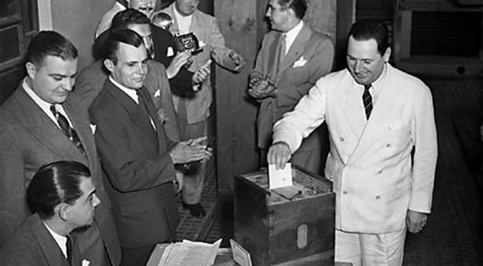
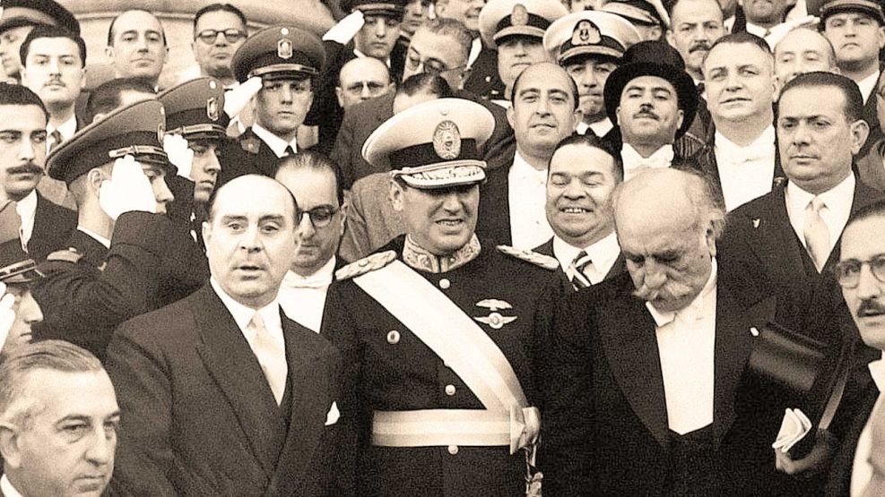
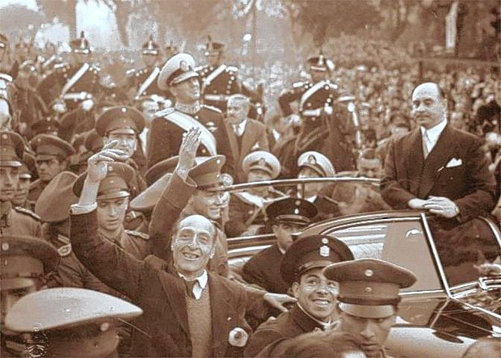
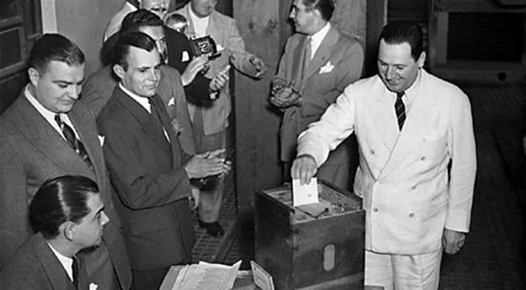
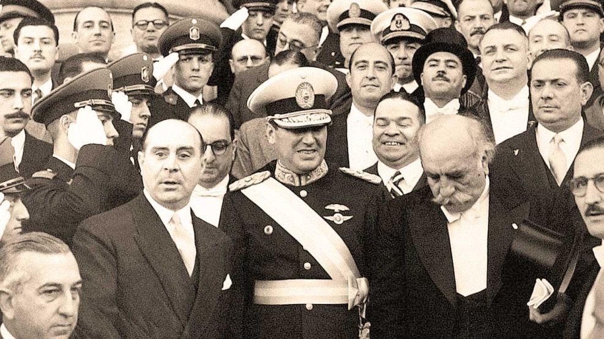
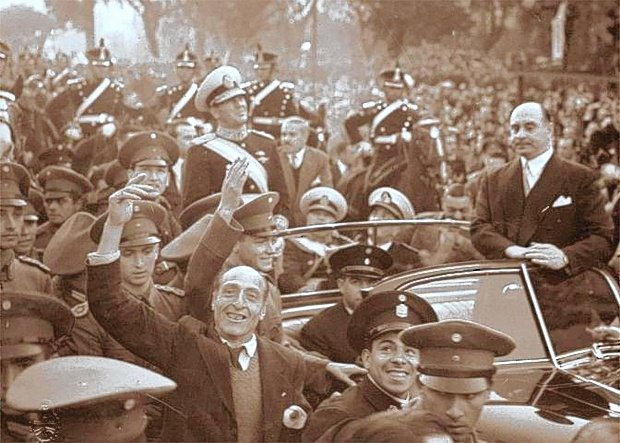
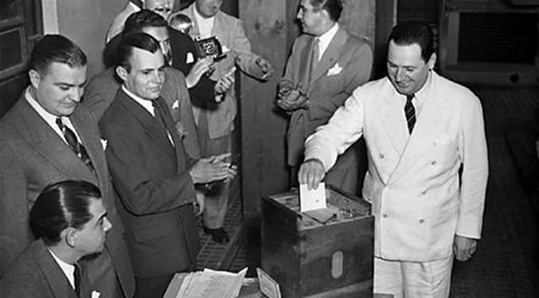
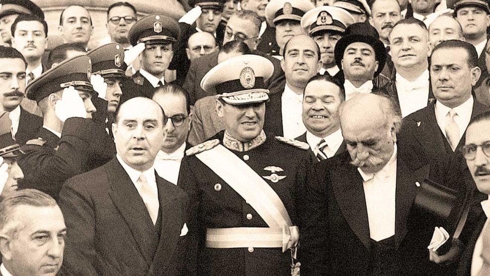
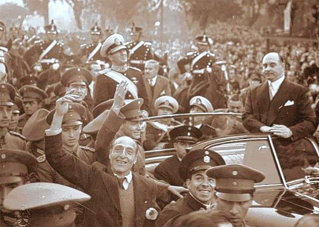

El primer gobierno de Juan Domingo Perón se extendió desde el 4 de junio de 1946 hasta el 4 de junio de 1952. Perón, acompañado por Hortensio Quijano como vicepresidente, asumió la presidencia de Argentina tras ganar las elecciones de 1946, consolidando un proyecto político y social que transformaría profundamente el país y daría origen al movimiento conocido como peronismo.
Perón llegó a la presidencia en un contexto de posguerra mundial, que le permitió implementar un modelo de industrialización por sustitución de importaciones. Su ascenso al poder fue precedido por el 17 de octubre de 1945, una movilización masiva de trabajadores que exigió su liberación y evidenció el fuerte apoyo popular a su figura, labrado durante su gestión al frente de la Secretaría de Trabajo y Previsión (1943-1945).
El primer gobierno peronista se caracterizó por una profunda reforma del Estado y de la sociedad argentina, con políticas que buscaron la **justicia social**, la **independencia económica** y la **soberanía política** (conocidos como las "tres banderas" del peronismo).
El primer gobierno de Perón sentó las bases del Estado de Bienestar en Argentina, generando una lealtad masiva en sectores populares y trabajadores que perduraría por décadas. Sus políticas transformaron la estructura económica y social del país, y aunque enfrentó una fuerte oposición de sectores conservadores y antiperonistas, su impacto fue innegable y dio forma a gran parte de la política argentina del siglo XX. El peronismo se consolidó como una fuerza política central y popular.


